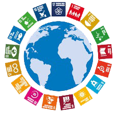

Os Objetivos de Desenvolvimento Sustentável (ODS) são resultado de um longo processo de negociações e debates globais, que teve início após a Guerra Fria. A origem dos ODS pode ser traçada até a ECO-92, que aconteceu no Rio de Janeiro, onde 178 países assinaram a Agenda 21.
O que são as ODS's?
Como Surgiram?
Este projeto é uma extensão dos Objetivos de Desenvolvimento do Milênio (ODM), que foram propostos em 2000 e tinham como objetivo atender às necessidades dos países mais pobres. Os ODM foram oito objetivos específicos e mensuráveis, que incluíam a erradicação da pobreza, o acesso à educação, a promoção da igualdade de gênero e a sustentabilidade ambiental.
Os ODS foram motivados por:
- Absorver o que não foi cumprido pelos ODM
- Integrar temas como consumo sustentável, mudança climática, desigualdade econômica, inovação, diversidade, paz e justiça
- Envolver vários setores da sociedade global, como governos, sociedade civil e empresas
